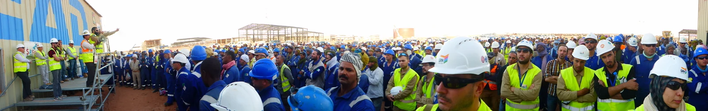
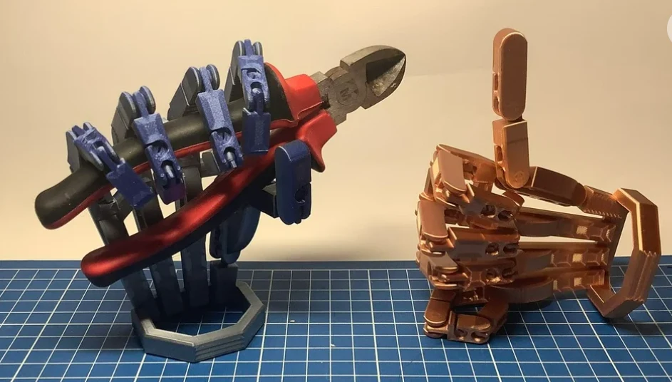
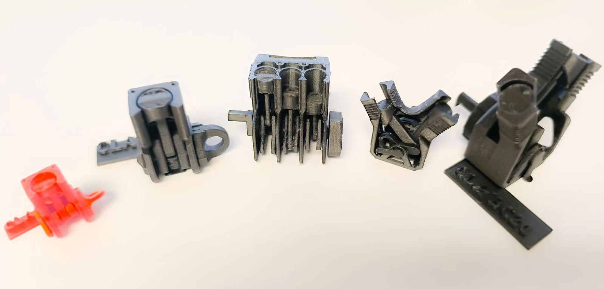

Safety starts with people.
Todos Volvemos Seguros. A bilingual facilitation approach that combines storytelling, hands-on devices, group learning and meaningful questions to strengthen safety conversations.
Everyone returns home safe.
The 2024 Todos Volvemos Seguros presentation opens with a personal purpose: leave the world better than we found it. It spans agricultural, industrial and major oil-and-gas environments, while holding a single principle: nobody should be injured.
“La clave de hoy es salir con preguntas.”
The objective is not to distribute ready-made answers, but to leave with better questions.
Listen. Experience. Reflect. Act.
Storytelling
Start with personal purpose and human impact, placing people rather than procedures at the heart of the conversation.
Tangible learning
Use 3D-printed mechanisms and group exercises to stimulate interaction, shared observation and a new perspective.
Debrief & commitment
Discuss choices, sharpen preventive observations and connect safe work to colleagues, family and daily behaviours.
Engineering as a conversation starter.
In the presentation, 3D-printing and mechanical devices become metaphors for human and machine interaction. The concept is deliberately playful, but the objective is serious: reveal assumptions, support teamwork and learn from how devices behave.
La impresión 3D funciona como una herramienta didáctica para conversar sobre decisiones, prevención y trabajo en equipo.

Concrete material, human purpose.


These photographs illustrate the real prototypes and making context. The available presentation is included for the full original narrative.
What participants take back to work
Walk the talk
Leadership credibility comes from visible actions aligned with safe work expectations.
Preventive conversations
Notice hazards early, engage respectfully and support proactive controls.
Stop work when needed
Recognize the legitimacy of stopping unsafe work and escalating concerns.
The presentation also emphasizes the positive impact of safety on the individual and family. This is a workshop concept, not a certification or proof of measurable training outcomes.